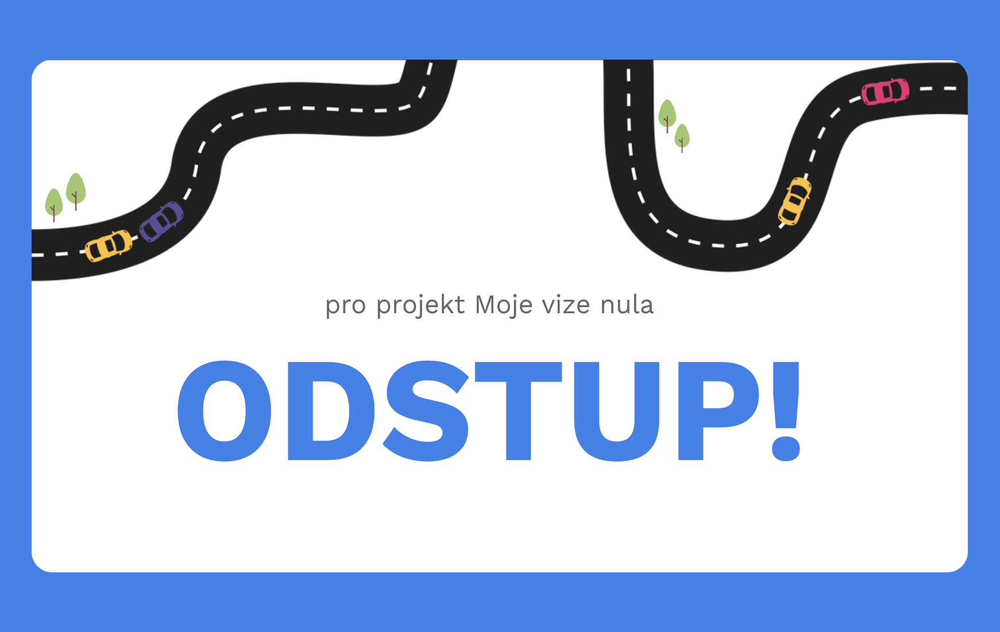

V týmu jsme navrhli koncept „Odstupky" — digitální výstražné destičky umístěné na zadní části vozidla, která v reálném čase zobrazuje doporučený odstup podle aktuální rychlosti auta. Já jsem pracovala na vizuálním zpracování projektu, návrhu grafických výstupů a podobě propagační kampaně. Podílela jsem se na tvorbě prezentace, sociálních výstupů a vizuální identity konceptu. Vizuální styl jsme postavili na výrazném kontrastu neonově zelené a modrofialové barvy, jednoduché typografii a minimalistických tvarech připomínajících dopravní značení. Součástí návrhu byla také microsite, animované ukázky fungování zařízení a návrh kampaně pro sociální sítě.
ODSTUP! — Moje vize nula
Role
Grafický designér
Předmět
Řízení multimediálních projektů
Semestr a ročník
LS 2024/2025, 2. ročník Bc.
Typ
Skupinový projekt
Oblast
vizuální komunikace, kampaň

Výzva
Projekt vznikl v rámci soutěže Moje vize nula zaměřené na bezpečnost silničního provozu. V týmu jsme se zaměřili na problém nedodržování bezpečného odstupu mezi vozidly, který podle statistik představuje častý zdroj nebezpečných situací na silnici. Výzkumy ukazovaly, že mnoho řidičů si svou vzdálenost od ostatních aut vůbec neuvědomuje nebo ji podceňuje. Hledali jsme proto způsob, jak na rizikovou situaci upozornit přímo v okamžiku jejího vzniku, ne až zpětně v rámci preventivních kampaní.
Řešení
Výsledek
Projekt se dostal do finále soutěže Moje vize nula pořádané Kooperativou. Projekt mi umožnil pracovat s brandingem a kampaní v kontextu společensky zaměřeného tématu a navrhovat výstupy pro reálnou veřejnou komunikaci.